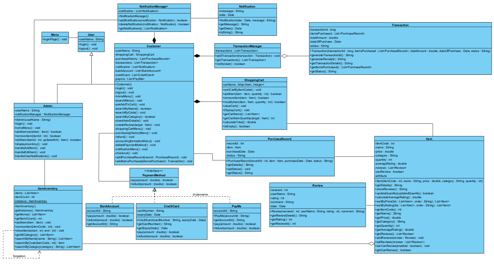
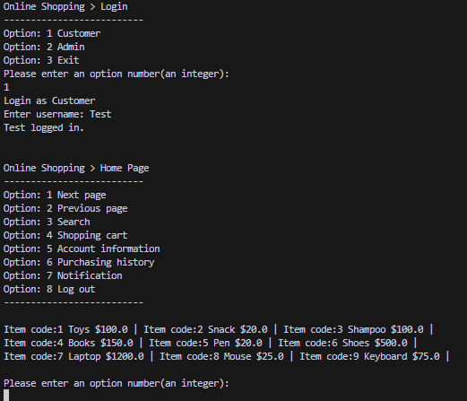
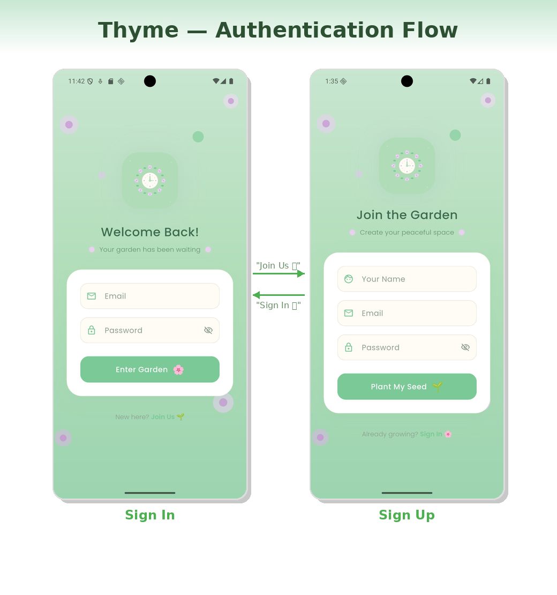
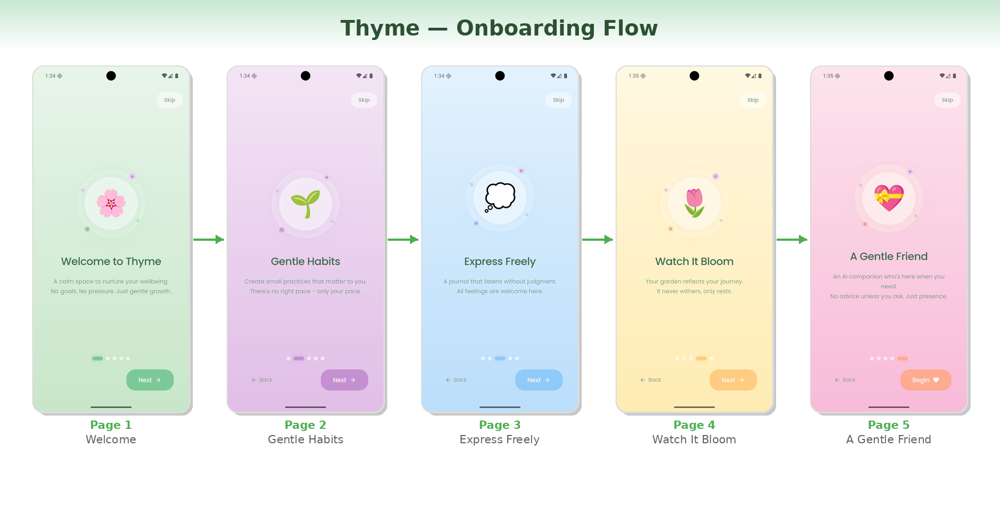

Computer Science Student | SID: 57844858
Email: meiktsang8-c@my.cityu.edu.hk
A proactive Computer Science student with hands‑on experience in software development, API integration, and quality assurance. Familiar with full‑cycle software testing, cross-platform app development (Flutter/Firebase), and backend system design.
Tech Stack: C++, OOP, UML, SQL
A command-line e-commerce system with user authentication, product management, shopping cart, and payment features. Designed with object-oriented principles and modular structure.


Tech Stack: Flutter, Firebase, Dart
A cross-platform mobile app focused on mood tracking, wellness guidance, and calm user experience.


Project Executive Intern @ Portalvision Limited